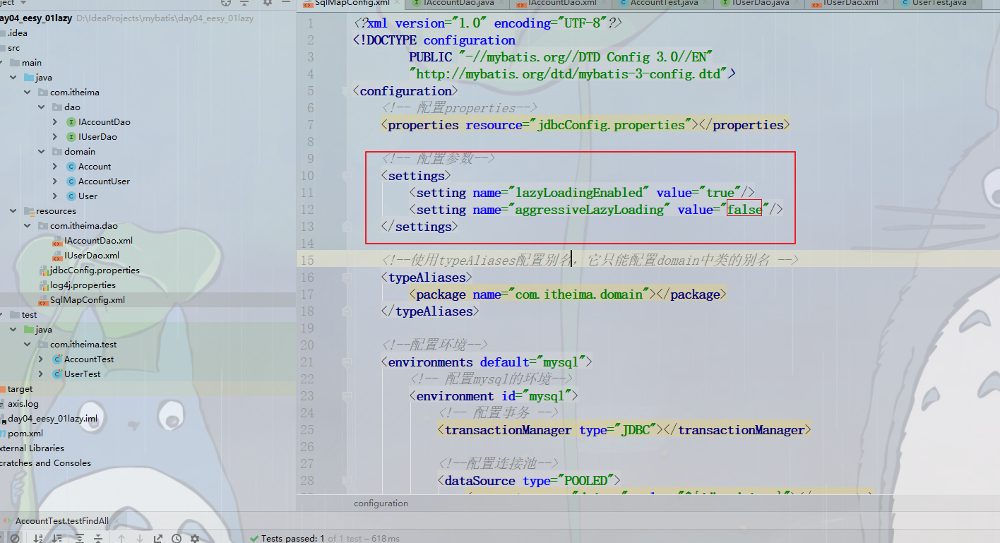
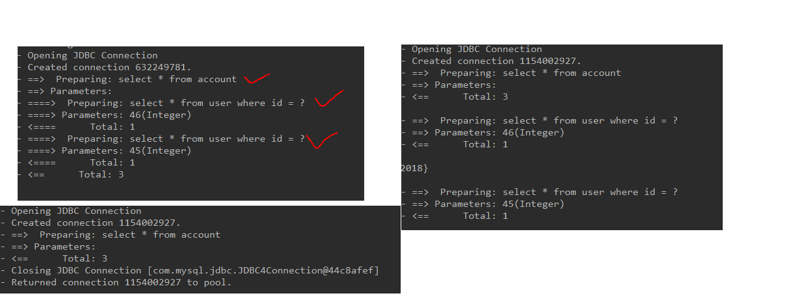
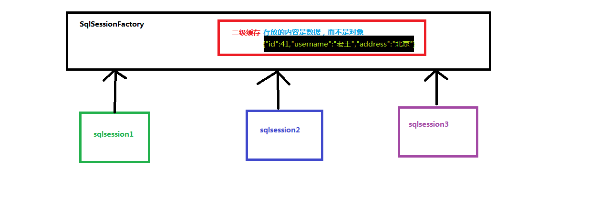

mybatis的延迟加载
问题：在一对多中，当我们有一个用户，他有100个账户
在查询用户的时候，要不要把关联的账户查出来？
在查询用户的时候，用户的账户信息应该是，什么时候使用，什么时候查询（延迟加载）
在查询账户的时候，要不要把关联的用户查出来
在查询账户时，账户的所属用户信息应该随着账户查询时一起查询出来（立即加载）
什么是延迟加载
在真正使用数据时才发起查询，不用的时候不查询。按需加载（懒加载）
什么是立即加载
不管用不用，只用一调用方法，马上发起查询
在对应的四种表关系中：一对多、多对一、一对一、多对多
一对多、多对多：通常情况采用延迟加载
多对一、一对一：通常情况采用立即加载
实现延迟加载
配置延迟加载

一对一的延迟加载
修改resultMap封装策略

结果

一对多的延迟加载
修改resultMap封装策略

mybatis的缓存
什么是缓存
存在于内存中的临时数据
为什么使用缓存
减少和数据库的交互次数，提高执行效率
什么样的数据能使用缓存，什么样的数据不能使用
适用于缓存：
经常查询、不经常改变、数据的正确与否对最终结果影响不大
不适用于缓存：
经常改变、数据的正确与否与最终结果影响大（非实时数据）
例如：商品的库存、银行的汇率、股市的牌价
Mybatis中的一级缓存和二级缓存
Mybatis一级缓存：Mybatis中SqlSession对象的缓存（默认生效）
SqlSession提供的一级缓存：Map<路径名，对象>。
当我们再次查询同样的数据时，mybatis会先去SqlSession中查询是否有，有的话直接拿出来用。
当SqlSession对象消失时，mybatis一级缓存也就消失
一级缓存示例


清空一级缓存
三种方式：
1.新建一个SqlSession对象
2.调用SqlSession的clearCache方法
3.调用SqlSession的commit方法
Mybatis二级缓存：Mybatis中SqlSessionFactory对象的缓存（默认不生效）
同一个SqlSessionFactory创建出来的SqlSession对象共享缓存Map<路径名，数据>
二级缓存的使用步骤：
1.让Mybatis框架支持二级缓存（在SqlMapConfig.xml配置）

2.让当前的映射文件支持二级缓存（在IUserDao.xml配置）
3.让当前的操作支持二级缓存（在select标签中配置）

二级缓存示例

二级缓存说明

Mybatis一级缓存与二级缓存的区别：
一级缓存map里面存放的是对象（封装的），二级缓存map里面存放的是数据（未封装的）
mybatis的注解开发
环境搭建
注意一点：
当同时存在xml和注解，且想要使用注解时，xml的路径不能和注解的路径一样，否则会报错。
解决：
1.xml放于其他路径下
2.直接删除

单表CRUD（代理Dao方式）
多表查询操作
注解中实体类域与数据库列对应方式（解决实体类中域名和数据库列名不一致问题）

一对一配置、一堆多配置
一般用立即加载


一对多、多对多配置
一般用延迟加载


缓存的配置
一级缓存
一级缓存是默认生效的，不需要开启
二级缓存